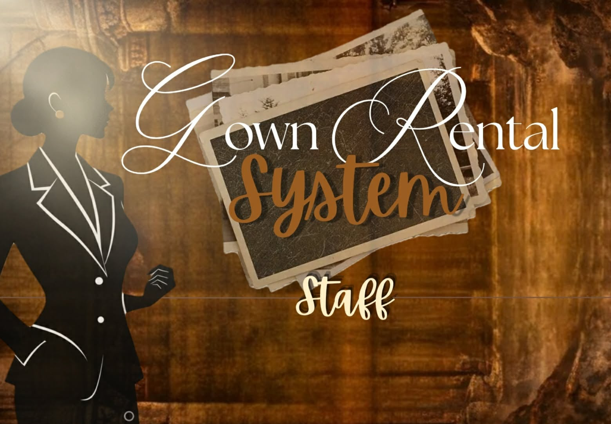

Featured Projects
A collection of academic projects that demonstrate my creativity, problem-solving, and developing technical skills.

Gown Rental Management System
A management system designed to organize gown inventory, customer information, rental transactions, deposits, returns, and income records.
Technologies: Visual Basic and Microsoft Access

Movie Ticket Booking System
A Python-based application for recording movie reservations, customer details, movie schedules, seat numbers, and ticket quantities.
Technology: Python
Paco Park: A Historical Documentary
A documentary project that explores the history of Paco Park and its connection to Philippine history and José Rizal.
Tools: Research, scriptwriting, and video editing